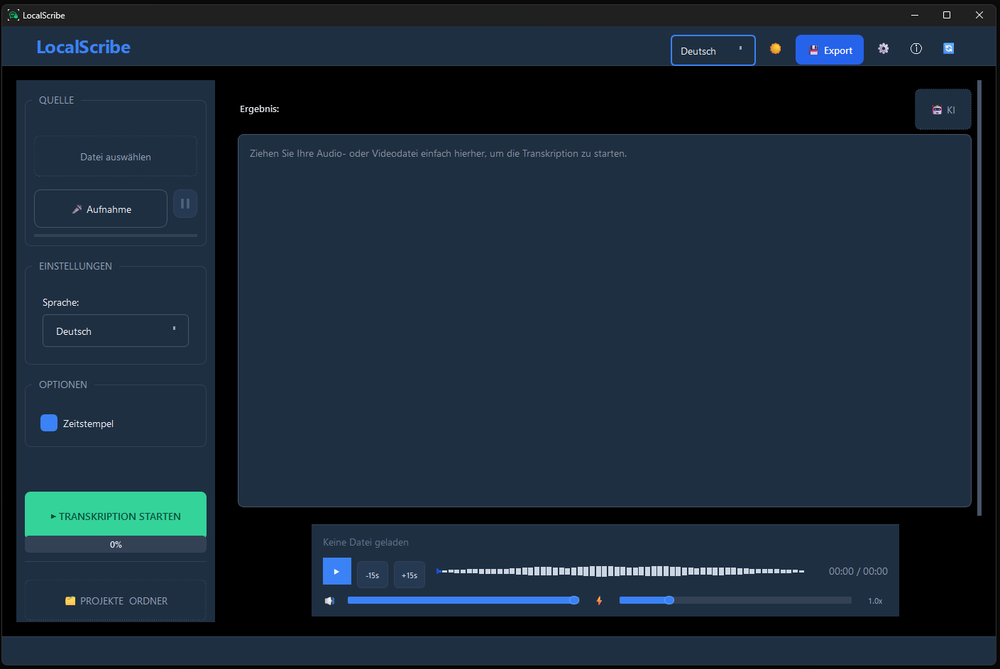

KI-Transkription.
Lokal auf Ihrem PC.
Ihre Daten bleiben bei Ihnen.
Windows-Software für lokale KI-Transkription – ohne Cloud, ohne Abo. Ihre Schweigepflicht (§ 203 StGB) bleibt gewahrt.
LocalScribe ist eine Windows-Software für lokale KI-Transkription, die auf OpenAI Whisper Large-v3 basiert und Audiodateien vollständig offline auf dem eigenen PC verarbeitet — ohne Cloud, ohne Abo, ab 39 € Einmalzahlung.
inkl. 24 Monate Updates • Keine Abokosten
Ich bin:

Warum ist Cloud-Transkription für vertrauliche Gespräche problematisch?
Cloud-basierte Transkriptionsdienste wie Otter.ai oder Amberscript übertragen Audiodaten an externe Server. Für Berufsgeheimnisträger nach § 203 StGB — Ärzte, Anwälte, Therapeuten — ist das ein Datenschutzverstoß. LocalScribe löst dieses Problem durch vollständig lokale Verarbeitung auf dem Windows-PC.
Berufsgeheimnisträger wie Ärzte, Therapeuten und Anwälte (§ 203 StGB) müssen den Einsatz externer Cloud-Dienste besonders sorgfältig prüfen. Lokale Open-Source-Lösungen sind oft zu kompliziert, und klassische Offline-Software hat häufig einen hohen Einstiegspreis.
100% Offline
Ihre Audiodateien bleiben auf Ihrem Rechner; die Transkription läuft lokal statt in der Cloud.
GPU-Beschleunigt
GPU-beschleunigt (NVIDIA CUDA + AMD/Intel Vulkan): LocalScribe transkribiert je nach System deutlich schneller als in Echtzeit.
Einmalkauf
Keine versteckten Abokosten. Sie zahlen einmalig und nutzen die Software für immer.
Windows-Installer
Einfache "Next-Next-Finish" Installation. Keine Programmierkenntnisse, keine Kommandozeile nötig.
Meetings & Bildschirmaufnahmen
Zoom, Teams oder Google Meet aufgezeichnet? Laden Sie die Datei einfach in LocalScribe — Transkription komplett offline, ohne Cloud-Upload.
Vorlesungen & Seminare
Studenten können aufgezeichnete Vorlesungen, Seminare oder Lernvideos automatisch transkribieren und als durchsuchbaren Text exportieren.
Podcasts & Content
Content Creator transkribieren Podcasts, YouTube-Videos oder Interviews — für Untertitel, Blogartikel oder Shownotes, ohne Abo-Kosten.
Für alle Datenschutzbewussten
Nicht nur für Berufsgeheimnisträger: Wer seine Gespräche nicht in die Cloud schicken möchte, findet in LocalScribe die einfachste Offline-Lösung.
Mehr als nur Audiodateien transkribieren
LocalScribe kann nicht nur Audiodateien transkribieren — nehmen Sie Ihren Bildschirm auf, zeichnen Sie Meetings auf oder sprechen Sie direkt ins Mikrofon. Alles wird lokal verarbeitet.
Bildschirmaufnahme transkribieren
Nehmen Sie mit der Windows-eigenen Funktion (Win+G) oder einem Tool wie OBS Ihren Bildschirm auf — LocalScribe transkribiert den Ton anschließend vollständig offline.
Meeting-Protokolle automatisch
Aus der Transkription erstellt LocalScribe per KI eine Zusammenfassung — ideal als Protokoll für Zoom-, Teams- oder Google Meet-Besprechungen.
Direkt ins Mikrofon sprechen
Kein Aufnahme-Tool nötig: Sprechen Sie direkt in LocalScribe. Ideal für Diktate, Notizen oder spontane Ideen — alles bleibt auf Ihrem PC.
Alle gängigen Formate
MP3, WAV, M4A, MP4, WebM und viele weitere Formate werden unterstützt — egal ob Audiodatei oder Videoaufnahme eines Meetings.
Was macht LocalScribe besser als Cloud-Transkriptionsdienste?
LocalScribe nutzt OpenAI Whisper Large-v3 für KI-Transkription direkt auf dem PC. Die Software unterstützt über 99 Sprachen, GPU-Beschleunigung via NVIDIA CUDA und Export als PDF, DOCX, TXT oder SRT — alles ohne Internetverbindung. Sprechererkennung ist für die Professional Edition geplant.
| Kriterium | Cloud-Dienste | Legacy-Software | LocalScribe |
|---|---|---|---|
| Daten verlassen Ihren PC | ❌ Upload nötig | ⚠️ Je nach Version | ✅ Nie |
| § 203 StGB konform | ❌ Zusätzliche Prüfung nötig | ⚠️ Je nach Produkt | ✅ Ja |
| Preis | Laufende Abokosten | Häufig hoher Einstiegspreis | 39 € (Einführungspreis) |
| AVV erforderlich | Ja | Je nach Version | Nein (lokale Transkription) |
| GPU-Beschleunigung | Nein (Server) | Nein | ✅ Ja (NVIDIA/AMD/Intel) |
Ist LocalScribe DSGVO-konform und für Berufsgeheimnisträger geeignet?
LocalScribe verarbeitet alle Audiodaten ausschließlich lokal auf dem Windows-PC des Nutzers. Keine Daten werden an externe Server übertragen. Die Software unterstützt damit DSGVO-konforme Arbeitsabläufe und ist geeignet für Berufsgeheimnisträger nach § 203 StGB.
LocalScribe wurde speziell für Berufe mit strengen Verschwiegenheitspflichten entwickelt. Unterstützen Sie die Einhaltung von § 203 StGB und DSGVO, indem sensible Inhalte bei der Transkription Ihren Rechner nicht verlassen.
Ihre Patienten, Mandanten und Klienten vertrauen Ihnen. LocalScribe schützt dieses Vertrauen.
LocalScribe wurde speziell für Berufe unter § 203 StGB entwickelt — damit Sie KI nutzen können, ohne Ihre Schweigepflicht zu riskieren.
Was kostet LocalScribe und warum gibt es kein Abo?
LocalScribe kostet einmalig 39 € und beinhaltet 24 Monate Updates — ohne versteckte Kosten, ohne Abo. Im Vergleich zu Cloud-Diensten wie Otter.ai (ca. 20 €/Monat) amortisiert sich die Investition bereits nach zwei Monaten.
Kein Abo, keine versteckten Kosten. Sichern Sie sich jetzt den Einführungspreis.
Alle Kernfunktionen sind in der Grundversion enthalten. Professional erweitert um Sprechererkennung und Berufspakete.
Einführungspreis
Grundversion — Transkription + KI + Export
inkl. MwSt. · Frühbucher-Preis – ab Q3 2026 voraussichtlich 79 €
Einmalig zahlen, dauerhaft nutzen — kein Ablaufdatum.
- ✓ 100% lokale Verarbeitung
- ✓ GPU-Beschleunigung
- ✓ 24 Monate Updates inklusive
- ✓ DSGVO-konform · § 203 StGB unterstützt
- ✓ Unlimitierte Transkriptionen
- ✓ Export (TXT, SRT, Markdown, JSON, PDF)
- ✓ KI-Zusammenfassung
- ✓ Chat mit Dokument — Rückfragen stellen (lokal, ohne Cloud)
ⓘ Sie erhalten den Download-Link sofort nach dem Kauf per E-Mail.
↑ Bitte erst die Checkbox oben bestätigen
Sichere Zahlung über Stripe. Widerrufsbelehrung
Professional
Erweiterte Version mit Profi-Features
Voraussichtlich ab Q4 2026
- ✓ Alles aus dem Einführungsangebot
- ✓ Sprechererkennung — erkennt automatisch wer spricht
- ✓ Berufspakete (Medizin, Recht, Therapie)
- ✓ Fachvokabular
- ✓ Priorisierter Support
🔔 Sprechererkennung kommt im nächsten großen Update.
Verfügbar ab Q4 2026
Was kostet Sie der Wechsel?
Vergleichen Sie LocalScribe mit laufenden Cloud-Kosten.
Cloud-Abo (ca. 20 €/Monat)
240 €
LocalScribe (einmalig)
39 €
Sie sparen 201 €!
Häufig gestellte Fragen
Nach der einmaligen Online-Aktivierung arbeitet LocalScribe vollständig offline. Beim Start wird kurz geprüft, ob Ihre Lizenz gültig ist — ohne Internetverbindung funktioniert die Software bis zu 30 Tage weiter.
Für optimale Geschwindigkeit empfehlen wir eine NVIDIA Grafikkarte (ab RTX 3060). Die Software läuft auch auf der CPU, ist dann aber etwas langsamer. Mindestanforderungen: Windows 10/11, 8 GB RAM, 5 GB freier Speicherplatz.
Für die Transkription werden keine Audio- oder Textinhalte an externe Server übertragen. Die gesamte KI-Verarbeitung läuft lokal auf Ihrer Hardware. Externe Dienste werden nur für Kauf, Lizenzierung und E-Mail-Zustellung genutzt.
Die Software funktioniert weiterhin uneingeschränkt – Sie können LocalScribe ohne zeitliche Begrenzung nutzen. Sicherheits- und Kompatibilitätsupdates bleiben davon unberührt. Für neue Funktionen und Features können Sie optional einen Update-Pass erwerben.
Die Lizenz ist eine Einzelplatzlizenz. Bei einem Gerätewechsel hilft unser Support unter support@localscribe.de beim Umzug auf den neuen PC – ohne dass Sie eine zweite Lizenz kaufen müssen.
Ja. Nehmen Sie das Meeting als Audio- oder Videodatei auf (z.B. mit der eingebauten Aufnahmefunktion von Zoom, Teams oder Google Meet) und laden Sie die Datei anschließend in LocalScribe. Die Transkription erfolgt komplett offline auf Ihrem PC — kein Cloud-Upload, keine Datenweitergabe.
Nein. LocalScribe eignet sich für jeden, der Wert auf Datenschutz legt — von Studenten, die Vorlesungen aufnehmen, über Freelancer und Remote-Worker, die Meeting-Protokolle brauchen, bis hin zu Content Creators, die Podcasts oder Videos transkribieren. Die Berufsgeheimnisträger-Compliance (§ 203 StGB) ist ein Plus, aber kein Pflichtmerkmal.